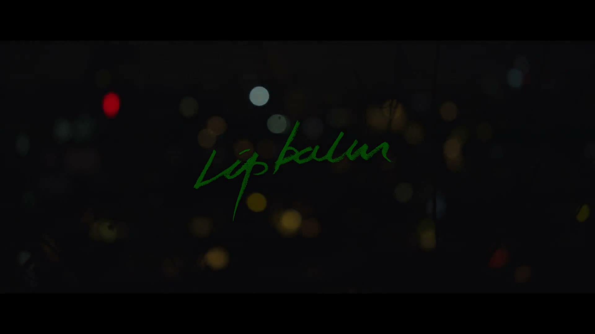

Audio Post Production
Lipbalm
Overview
도시의 밑바닥에서 살아가는 청춘들이 선택과 폭력, 생존 사이에서 무너져가는 모습을 통해 관계의 의미와 인간의 본성을 보여주는 작품입니다.
Before / After
Add video source to enable playback
대사 에디팅 전후를 비교해 들을 수 있습니다. Before는 현장 원본 음원, After는 ADR 보완과 앰비언스 레이어링이 완료된 최종 믹스입니다.
Approach
인물의 내러티브를 중심으로 한 대사 편집
대사 에디팅 단계에서는 인물의 감정 전달력과 자연스러운 호흡을 우선적으로 정리하며 장면의 흐름을 안정적으로 구축하는 데 집중했습니다. 이후 폴리와 앰비언스를 통해 공간의 현실감과 생활감을 세밀하게 설계하며, 화면 안 인물들이 실제 도시 안에 존재하는 듯한 질감을 만드는 데 집중했습니다.
현장에서 충분히 확보되지 못한 소스와 전달력이 약한 대사 구간은 ADR 작업을 통해 보완하며 전체적인 대사 완성도를 높였습니다. 특히 도시 속 위태로운 청춘들의 불안한 정서를 효과적으로 표현하기 위해, 앰뷸런스 사이렌과 같은 포인트 앰비언스를 적극 활용하여 장면 전반에 긴장감과 불안정한 분위기를 형성하고자 했습니다.
Challenges
ADR 싱크 및 액션 사운드 디자인
ADR 진행 과정에서 배우들의 호흡과 감정 톤이 현장 촬영 당시보다 전체적으로 차분하게 녹음되어, 기존 현장 음원과 자연스럽게 연결시키는 과정이 가장 큰 과제였습니다. 단순히 대사의 음량이나 톤을 맞추는 것을 넘어, 장면 안에서 감정선이 끊기지 않도록 호흡의 속도와 에너지감을 세밀하게 조정해야 했습니다.
폭행 장면에서는 배우 간 액션의 타이밍과 실제 타격 동작의 합이 완전히 일치하지 않는 부분이 존재해 이펙트 사운드의 싱크를 맞추는 데 어려움이 있었습니다. 특히 액션 시퀀스 사운드 디자인을 본격적으로 다뤄본 첫 작업이었던 만큼, 타격감과 현실감 사이의 균형을 조절하는 과정에서 미숙한 부분도 있었습니다.
Learnings
ADR과 액션 사운드에서 배운 것
이번 작업을 통해 ADR은 단순히 부족한 대사를 대체하는 과정이 아니라, 현장의 감정과 호흡을 얼마나 자연스럽게 재현하느냐가 핵심이라는 점을 깊게 체감했습니다. 특히 동일한 배우의 목소리라도 녹음 환경과 연기 톤에 따라 장면의 몰입감이 크게 달라질 수 있다는 점을 경험하며, 대사 편집에서 감정선과 호흡의 연결감을 세밀하게 다루는 능력의 중요성을 배웠습니다.
액션 시퀀스 작업에서는 화면에 정확히 맞는 소리를 배치하는 것만으로는 충분하지 않으며, 타격의 리듬감과 장면의 긴장감을 어떻게 설계하느냐에 따라 체감되는 현실감이 크게 달라진다는 점을 이해하게 되었습니다. 첫 액션 사운드 디자인 작업이었던 만큼 시행착오도 있었지만, 프레임 단위의 싱크 조절과 레이어링의 중요성을 실질적으로 익힐 수 있었습니다.